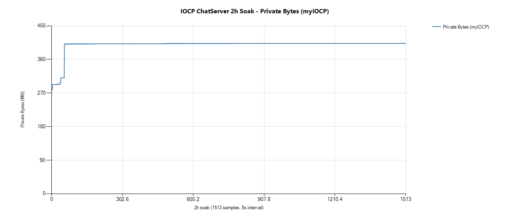
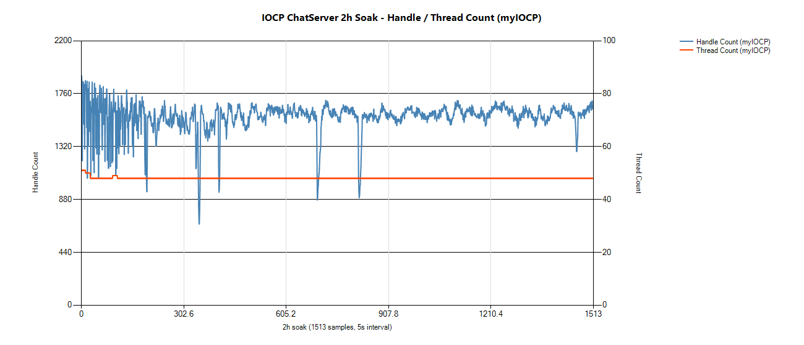

EA Korea에서 FC 온라인 QA로 2년, C++ 게임 서버를 1년 공부했고, 메이플스토리 월드 게임 메이플 빌리지를 AI 세션들과 함께 혼자 만들어 공개 출시했습니다.
성격이 제각각인 주민을 데리고 영지를 꾸리고 바깥을 원정하는 메이플스토리 월드 SRPG. 규칙과 수치, 출시 결정, 실제 플레이 확인은 직접 하고 문서 정리·구현·테스트는 역할을 나눈 AI 세션에 맡겼습니다.
24개 장 전부에 '확인 기준' 절. 명령 무시 확률 30%라면 1,000회 중 257 ~ 343회일 때 정상(±3σ)으로 판정합니다.
자동 원정 하루 4.5판을 가정해 ★1 주민의 Lv10 도달 기간을 계산. 출시 당일 약 15일이 빠르다고 보고 약 21일로 늘렸습니다 (v1.0.2).
기준 = 시작 주민 셋이 자동 20판 중 16판 클리어. 달팽이 공격 간격 2.0초에서 15/20 → 2.25초로 조정해 18/20.
불온일 때 출발 거부 20%로는 대원 셋 중 한 명 이상 거부가 약 49%. 너무 잦아 10%로 낮췄습니다.
중단 = 획득분 전부 손실, 바로 재출발 / 전멸 = 절반 유지, 90분 부상. 90분은 자동 원정 4 ~ 11판으로, 다른 주민을 쓰게 만듭니다.
C++ 서버 경험으로 판정 주체, 접속 끊김 처리, 중복 정산 방지를 기획서에 미리 적었습니다.
| 버전 | 내용 |
|---|---|
| v1.0.0 | 첫 공개 출시 (비공개 빌드 v0.4.52까지 반복 검증) |
| v1.0.1 · v1.0.2 | 출시 당일 보석 상품 가격, 레벨별 필요 경험치 수정 |
| v1.1.0 | 침공 · 훈련소 · 공방 · 새 마을 · 채팅 추가 |
| v1.1.1 ~ v1.1.3 | 수정 업데이트 |
운영 문서로 재화 원장 · 행동 로그 · 오류 코드 · 보상 우편 등 문의 추적 체계를 따로 설계했습니다.
역할마다 세션을 열고, 문서로 일을 넘기고, 다른 세션이 검증하게 합니다.
QA 세션이 올린 버그는 화면 그림과 해당 기획서 절을 붙이고, 다른 세션이 확인한 것만 개발로 넘깁니다. 이 단계를 거친 212건 중 37건이 잘못된 판정으로 걸러졌습니다.
Windows IOCP 기반 멀티스레드 채팅 서버를 혼자 설계·구현했습니다. 로그인(DB) · 방 입퇴장 · 채팅 브로드캐스트, Lock-Free 메모리 풀, MSSQL 비동기 연동, 패킷 암호화까지 포함합니다.
워커는 패킷을 큐에 넣고 끝. 컨텐츠는 Update 스레드 하나가 전담해 컨텐츠 영역의 락을 없앴습니다.
수십 ms 걸리는 Stored Procedure를 별도 DB Worker로 넘겨, DB를 기다리는 동안에도 채팅이 멈추지 않게 했습니다.
Top을 [17bit stamp][47bit pointer]로 묶어 같은 주소가 다시 올라와도 CAS가 실패하게 했습니다.
슬롯 인덱스 16bit + generation 48bit. 슬롯을 재사용해도 이전 사용자 앞 패킷을 걸러 냅니다.
AES-128-CTR로 암호화한 뒤 HMAC-SHA256. 변조 패킷은 복호화 전에 버립니다. --tamper 주입으로 확인.
| 증상 | 원인 | 해결 |
|---|---|---|
| 브로드캐스트 중 크래시 | 에러 경로에서 패킷 이중 Release | 소유권을 호출자로 일원화 |
| 살아 있어야 할 세션이 사라짐 | ioRefCount=0 시작 → Send 완료가 먼저 와 세션 반환 | ioRefCount=1로 시작, CloseSession에서 회수 |
| 부하 시 TPS 0 프리징 | FlushSend가 락 없이 송신 큐 접근 | 큐 조작 구간 보호 |
| 끊긴 세션이 남음 (누수) | 즉시 실패 분기에서 CloseSession 누락 | 두 분기에 CloseSession 추가 |
공통점은 "처리 중인 자원을 누가, 언제 반환하는가" — 증상 → 가설 → 확인 방법 → 결과를 한 건씩 기록하며 좁혔습니다.
동접 약 1,000(피크 1,500)에서 접속·해제 반복과 변조 트래픽을 섞어 2시간 · 51만 회 접속·해제를 유지했습니다.
| 측정 | 결과 |
|---|---|
| 접속·종료·정리 카운터 차분 (51만 사이클) | 0 |
| Private Bytes (정상 상태 2시간) | 401.4 ~ 403.1MB, 변동 0.4% |
| Handle / Thread | 우상향 없음 |
| Debug CRT 힙 델타 | 0.012%, 사이클 수에 비례하지 않음 |
| 에러 | 0건 |


loopback 측정이라 처리량 수치는 환경에 따라 다릅니다.
서버 전체(네트워크 계층, 이동·전투·리스폰, 직렬화, 섹터 AOI, 좌표 검증)를 직접 구현했습니다. 클라이언트와 더미 클라이언트는 학원 제공물이라 저장소에는 서버 코드만 있습니다.
6400×6400 월드를 625 섹터로 나누고, 이동·공격은 주변 9칸에만 보냅니다.
클라이언트 좌표가 서버 좌표와 50px 이상 다르면 서버 좌표로 강제 동기화. 위치 조작이 막히는 것을 확인했습니다.
끊을 세션을 바로 닫지 않고 모아 두었다가 사이클 끝에 일괄 정리해, 처리 중 자원이 사라지는 문제를 막았습니다.
세션 수를 늘려 가며 루프 비용을 측정해 Loop/sec 125,539 → 8,142. 이 측정이 IOCP로 옮긴 근거가 됐습니다.
학원 환경에서 2만 세션 접속을 확인했습니다 (목표 15,000).
FC 온라인 — FC Rebranding(EA SPORTS FC 전환) 프로젝트
신규·레거시 컨텐츠를 명세 기준으로 검증. 테스트케이스·체크리스트 작성, Jira 버그 추적, 재현 절차 문서화.
이슈 작성 방식 통일, 역할 분업, 진행 내용 문서화로 신규 인원이 문서만 읽고 바로 업무에 들어가게 했습니다.
출시 후 라이브 이슈 수가 사내 유사 규모 프로젝트 대비 약 10% 미만 (Jira 프로젝트별 집계).
프로카데미 · C++ 게임 서버 프로그래밍 (2025.04 ~ 2026.04) — C/C++ 메모리·CPU 캐시, TCP/IP·Socket API, MO 액션 서버, 멀티스레드 동기화·Overlapped IO·Lock-Free, IOCP 네트워크 라이브러리